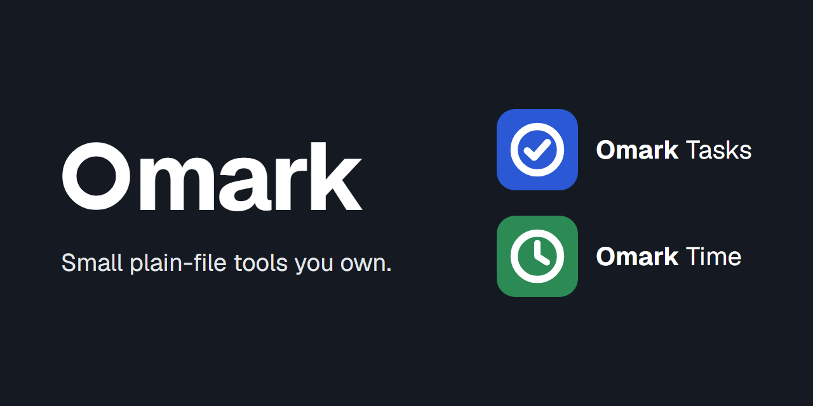

<!doctype html>
<meta charset="utf-8">
<title>Omark icons</title>
<style>
body { margin: 0; font: 12px ui-monospace, Consolas, monospace; }
section { display: flex; flex-wrap: wrap; gap: 24px; align-items: flex-end; padding: 24px; }
.light { background: #F2F4F7; color: #151A22; }
.dark { background: #0D1015; color: #E3E6EB; }
figure { margin: 0; }
figcaption { margin-top: 6px; }
</style>
<section class="light"><figure><figcaption>apps/tasks/public/icons/icon-192.png</figcaption></figure><figure><figcaption>apps/tasks/public/icons/icon-512.png</figcaption></figure><figure><figcaption>apps/tasks/public/icons/icon-512-maskable.png</figcaption></figure><figure><figcaption>apps/tasks/public/icons/apple-touch-icon.png</figcaption></figure><figure><figcaption>apps/tasks/public/icons/favicon-32.png</figcaption></figure><figure><figcaption>apps/tasks/public/icons/staging/icon-192.png</figcaption></figure><figure><figcaption>apps/tasks/public/icons/staging/icon-512.png</figcaption></figure><figure><figcaption>apps/tasks/public/icons/staging/icon-512-maskable.png</figcaption></figure><figure><figcaption>apps/tasks/public/icons/staging/apple-touch-icon.png</figcaption></figure><figure><figcaption>apps/tasks/public/icons/staging/favicon-32.png</figcaption></figure><figure><figcaption>brand/png/time/icon-192.png</figcaption></figure><figure><figcaption>brand/png/time/icon-512.png</figcaption></figure><figure><figcaption>brand/png/time/icon-512-maskable.png</figcaption></figure><figure><figcaption>brand/png/time/apple-touch-icon.png</figcaption></figure><figure><figcaption>brand/png/time/favicon-32.png</figcaption></figure><figure><figcaption>brand/png/omark/icon-192.png</figcaption></figure><figure><figcaption>brand/png/omark/icon-512.png</figcaption></figure><figure><figcaption>brand/png/omark/icon-512-maskable.png</figcaption></figure><figure><figcaption>brand/png/omark/apple-touch-icon.png</figcaption></figure><figure><figcaption>brand/png/omark/favicon-32.png</figcaption></figure><figure><figcaption>brand/png/omark-avatar-500.png</figcaption></figure><figure><figcaption>brand/png/social-preview.png</figcaption></figure></section>
<section class="dark"><figure><figcaption>apps/tasks/public/icons/icon-192.png</figcaption></figure><figure><figcaption>apps/tasks/public/icons/icon-512.png</figcaption></figure><figure><figcaption>apps/tasks/public/icons/icon-512-maskable.png</figcaption></figure><figure><figcaption>apps/tasks/public/icons/apple-touch-icon.png</figcaption></figure><figure><figcaption>apps/tasks/public/icons/favicon-32.png</figcaption></figure><figure><figcaption>apps/tasks/public/icons/staging/icon-192.png</figcaption></figure><figure><figcaption>apps/tasks/public/icons/staging/icon-512.png</figcaption></figure><figure><figcaption>apps/tasks/public/icons/staging/icon-512-maskable.png</figcaption></figure><figure><figcaption>apps/tasks/public/icons/staging/apple-touch-icon.png</figcaption></figure><figure><figcaption>apps/tasks/public/icons/staging/favicon-32.png</figcaption></figure><figure><figcaption>brand/png/time/icon-192.png</figcaption></figure><figure><figcaption>brand/png/time/icon-512.png</figcaption></figure><figure><figcaption>brand/png/time/icon-512-maskable.png</figcaption></figure><figure><figcaption>brand/png/time/apple-touch-icon.png</figcaption></figure><figure><figcaption>brand/png/time/favicon-32.png</figcaption></figure><figure><figcaption>brand/png/omark/icon-192.png</figcaption></figure><figure><figcaption>brand/png/omark/icon-512.png</figcaption></figure><figure><figcaption>brand/png/omark/icon-512-maskable.png</figcaption></figure><figure><figcaption>brand/png/omark/apple-touch-icon.png</figcaption></figure><figure><figcaption>brand/png/omark/favicon-32.png</figcaption></figure><figure><figcaption>brand/png/omark-avatar-500.png</figcaption></figure><figure><figcaption>brand/png/social-preview.png</figcaption></figure></section>
